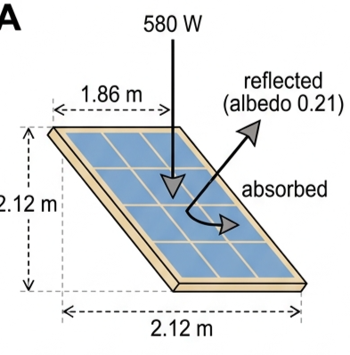
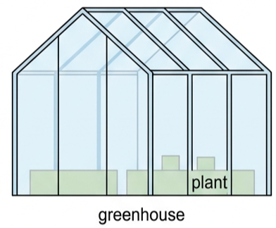
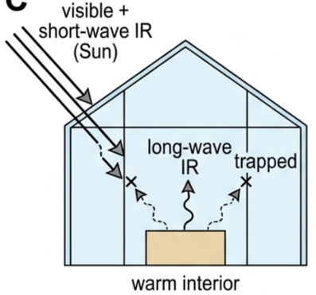
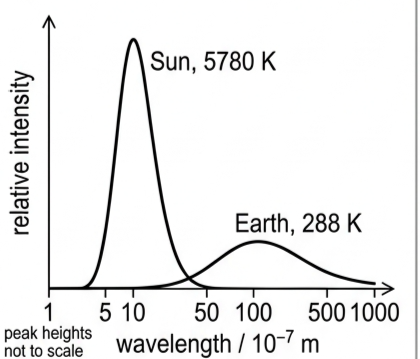
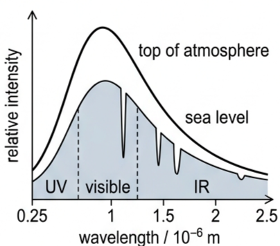
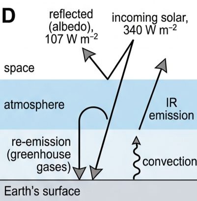
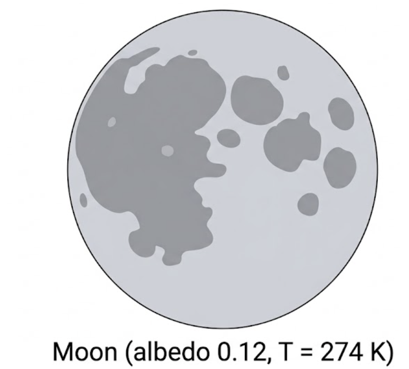

🌍 Hook – why is the Earth exactly the right temperature?
Mercury bakes at over 400°C by day; Mars freezes at −60°C on average. Earth sits at a gentle 15°C — comfortable for liquid water and life. That is not luck. It is the outcome of a balance: Earth absorbs solar radiation at exactly the rate it radiates thermal energy back into space. Get that balance's inputs even slightly wrong — through a change in albedo or emissivity — and the equilibrium temperature shifts.

📐 Emissivity, recapped
Before building the full balance, recall that a real surface radiates less efficiently than a perfect black body of the same temperature. Emissivity, ε, compares the two:
Rearranged, this is how emissivity is measured in practice: record the actual power radiated per unit area of a surface at known temperature T, then divide by \(\sigma T^4\) — the black-body value.
\(\varepsilon = \dfrac{1.3\times10^{16}/1.4\times10^{14}}{5.67\times10^{-8}\times210^4}\)
\(= 0.84\)
⚖️ Modelling a planet's energy balance
Over any extended time interval, a planet in thermal equilibrium satisfies:
The planet only intercepts sunlight over its disc-shaped cross-section, \(\pi r^2\) — the "shadow" it casts. But it radiates from its entire curved surface, \(4\pi r^2\). Putting intensity, albedo, and emissivity together:
where S is the solar constant and α is the albedo. Note \(\pi r^2\) cancels from both sides — the planet's radius does not actually affect its equilibrium temperature.
For Earth: \(S = 1.36\times10^3\ \text{W m}^{-2}\), \(r = 6.4\times10^6\ \text{m}\), average emissivity (Earth + atmosphere) \(\varepsilon = 0.61\), average albedo \(\alpha = 0.315\):
The Earth's actual mean surface temperature is 288 K (15°C) — so this simple model is reasonably accurate.
🧭 Nature of science – using computers to expand human knowledge
Predicting the future is usually far more likely to go wrong than right, because almost every real situation has too many variables and unknown factors — this is true even for events governed purely by physics, like next week's weather, let alone events shaped by human behaviour.
Mathematical modelling represents a situation with equations and numbers, but nearly always carries simplifications and assumptions that leave predictions uncertain. Modern computers can handle the enormous datasets and calculations that climate modelling requires — far beyond what any person could manage — but a computer's predictions are only as good as the input data and the specific tasks humans set it. One check on accuracy: run a model on a known past situation and see whether it correctly predicts what actually happened next. Predicting the past is always much easier than predicting the future.
🏡 The greenhouse effect – energy transfers within the system
So far we treated "Earth + atmosphere" as a single system. To understand the mechanism properly, we need the energy transfers between the surface and the atmosphere — the greenhouse effect.

The Sun's surface radiates at 5780 K, mostly as visible light and short-wavelength infrared. This radiation is transmitted through the greenhouse glass and warms the interior; some longer wavelengths are reflected by the glass, and much of the visible light exits again after bouncing off surfaces inside.
The warmed ground, pots and plants absorb infrared and heat up, then transfer thermal energy to the air by conduction; convection carries the warm air upward, but it mostly stays inside the greenhouse. Crucially, the contents of the greenhouse are much cooler than the Sun (≈300 K), so they re-radiate at much longer infrared wavelengths — and these longer wavelengths cannot pass back out through the glass. Thermal energy is effectively trapped inside.

📊 Sun vs Earth: two very different spectra
The Sun's black-body spectrum (5780 K) peaks at short, visible wavelengths. The Earth's much cooler surface (288 K) radiates a far lower-power spectrum, peaking at much longer infrared wavelengths. Compared to the Sun, Earth's radiation is at much lower power, with much longer wavelengths.
Most of the Sun's radiation passes straight through the atmosphere to reach the surface. But because Earth's outgoing radiation sits at different, longer wavelengths, a much smaller proportion of it is able to pass back out through that same atmosphere. Even so, over time the surface temperature adjusts until: total power received (Earth + atmosphere) = total power radiated (Earth + atmosphere).
🔎 Graph mastery
| Graph type | Axes (X, Y) | Shape | What to read |
|---|---|---|---|
| Black-body spectra (Sun vs Earth) | Wavelength /10⁻⁷ m (log scale) · relative intensity | Tall, narrow peak at short wavelength for the Sun (5780 K); much smaller, broader peak at long wavelength for Earth (288 K) | The two peaks cannot be directly compared in height — Earth's is exaggerated for visibility. Read off which curve dominates at a given wavelength |
| Solar spectrum reaching sea level | Wavelength /10⁻⁶ m · relative intensity | Smooth black-body curve (top of atmosphere) with a jagged, dipped curve beneath it (sea level) | The dips are wavelengths absorbed by atmospheric gases before reaching the ground; UV, visible and IR regions are marked |


🔄 Energy flow through the Earth's atmosphere
Averaged over the whole planet and over an extended time, the mean intensity of solar radiation arriving at Earth is 340 W m⁻². With an average albedo of 0.315, only 68.5% of that — 233 W m⁻² — is actually absorbed, split between the atmosphere and the surface.

💨 Greenhouse gases
Greenhouse gases are gases in the Earth's atmosphere that absorb and re-emit infrared radiation, thereby affecting Earth's temperature. The principal ones are water vapour (H₂O), carbon dioxide (CO₂), methane (CH₄) and nitrous oxide (N₂O) — each with both natural and human-activity origins. Atmospheric concentrations of CO₂, CH₄ and N₂O have been increasing significantly in recent years.
Earth's atmosphere formed over millions of years through volcanic and biological processes, and through collisions with comets and asteroids. By volume, air is approximately 78% nitrogen, 21% oxygen and 0.9% argon, with naturally occurring traces of other gases including CO₂ and water vapour. The greenhouse gases matter disproportionately: they absorb and then re-emit infrared radiation in all directions, an effect explained at the molecular level either by a resonance model or in terms of molecular energy levels.
✍️ Worked example – the Moon's average emissivity
Calculate the average emissivity of the Moon. Assume an average albedo of 0.12 and an average surface temperature of 274 K (noting the Moon's actual surface temperature varies enormously, so "average" is not a well-defined quantity).
\(1.36\times10^3\times(1-0.12)\)
\(= \varepsilon\times(5.67\times10^{-8})\times4\times274^4\)

🌊 Real-world: the ice–albedo feedback loop
If the Earth's surface temperature rises, snow and ice melt faster — a reasonable expectation, since a warmer surface transfers thermal energy to ice more quickly. But it works both ways: as snow and ice melt, they expose darker ocean or land underneath, which has a lower albedo. That darker surface absorbs more solar radiation, which raises the surface temperature further — melting still more ice. Average ocean albedo is higher in winter and closer to the poles, both because more of the surface is ice-covered and because sunlight strikes at a shallower, more reflective angle.
🚀 HL Extension – temperatures of planets around distant stars
The same energy-balance equation applies to any planet orbiting any star. The equilibrium surface temperature depends on: the star's luminosity/temperature, the planet's orbital distance (which sets its "solar constant" via the inverse-square law), the planet's albedo, its emissivity, whether it has an atmosphere (and the atmosphere's greenhouse gas content), and any internal heat sources.
Challenge: two planets orbit at the same distance from identical stars, but Planet X has a thick, cloudy atmosphere and Planet Y has none. Which is warmer? It depends on the balance of two competing effects: a thick cloudy atmosphere usually raises albedo (reflecting more sunlight, cooling the planet) but also raises the effective emissivity term's denominator effect by trapping outgoing IR (warming the planet) — Venus's extreme atmosphere shows the greenhouse effect winning decisively.
⚠️ Trap corner – common mistakes
| Misconception | Correct view |
|---|---|
| A planet absorbs sunlight over its whole surface, \(4\pi r^2\) | It only intercepts sunlight over its cross-sectional "shadow" area, \(\pi r^2\); it emits from the full surface, \(4\pi r^2\) |
| Albedo and emissivity are the same property | Albedo (α) describes reflection of incoming shortwave radiation; emissivity (ε) describes how efficiently a surface radiates thermal energy — they are independent |
| The model predicting T = 286 K is "wrong" because the real value is 288 K | A simple model using averaged ε and α is expected to be approximate; 286 K vs 288 K counts as a good agreement |
| The "greenhouse effect" traps energy the exact same physical way a garden greenhouse does | Real greenhouses mostly work by preventing convective heat loss (trapped warm air); the atmospheric greenhouse effect is dominated by selective infrared absorption/re-emission by gases, not blocked convection |
| Radius affects a planet's equilibrium temperature in this model | \(\pi r^2\) cancels algebraically from both sides of the balance equation — temperature depends only on S, α and ε, not on r |
Complete the statements:
✓ (b) absorbed rate \(= 580\times(1-0.21) = 458\ \text{W}\).
✓ (c) an anti-reflective coating and/or a dark, textured surface reduces the fraction reflected.
✓ (d) perpendicular incidence maximises the effective area exposed to the beam (no cosθ reduction), and reflection (albedo) increases at large angles of incidence, so keeping the beam perpendicular minimises reflection losses.
✓ (b) Melting ice and snow exposes darker land or ocean underneath, which has a lower albedo.
✓ That darker surface absorbs a greater fraction of incoming solar radiation, raising the surface temperature further — a positive feedback loop.
✓ (b) Near the poles the Sun's rays strike the water at a much shallower (more oblique) angle.
✓ Reflection off a water surface increases sharply at shallow angles of incidence, so more of the light is reflected rather than absorbed.
✓ Cloud emissivity varies considerably with cloud type, thickness and altitude, so it is not a fixed value.
✓ Because clouds cover so much area, even modest changes in average cloud cover or type shift the whole-Earth average emissivity noticeably, which is why cloud behaviour is one of the largest uncertainties in climate models.
✓ \(P = \varepsilon\sigma AT^4 = 0.72\times(5.67\times10^{-8})\times8.89\times291^4\).
✓ \(P \approx 2.6\times10^3\ \text{W}\) (about 2.6 kW).
✓ Using the average Earth emissivity \(\varepsilon = 0.61\): \(P = \varepsilon\sigma AT^4 = 0.61\times(5.67\times10^{-8})\times5.15\times10^{14}\times288^4\).
✓ \(P \approx 1.2\times10^{17}\ \text{W} \approx 1\times10^{17}\ \text{W}\), as required.
✓ \(T^4 = 952/(2.04\times10^{-7}) = 4.66\times10^9\).
✓ \(T \approx 261\ \text{K}\) (about −12°C).
✓ \(T^4 = 6.00\times10^9\), so \(T \approx 278\ \text{K}\) (about 5°C).
✓ \(T^4 = 466/(2.15\times10^{-7}) = 2.16\times10^9\).
✓ \(T \approx 216\ \text{K}\) (about −57°C).
✓ \(1.36\times10^3\times(1-0.299) = 0.580\times(5.67\times10^{-8})\times4T^4\).
✓ \(T^4 = 953/(1.31\times10^{-7}) = 7.25\times10^9\).
✓ \(T \approx 292\ \text{K}\) (19°C) — about 6 K warmer than the original 286 K.
✓ The planet's albedo.
✓ The planet's emissivity.
✓ Whether it has an atmosphere, and that atmosphere's greenhouse gas content; also any significant internal heat source.